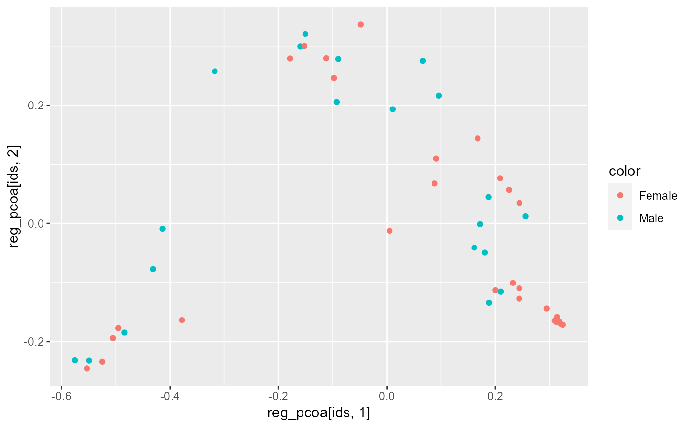
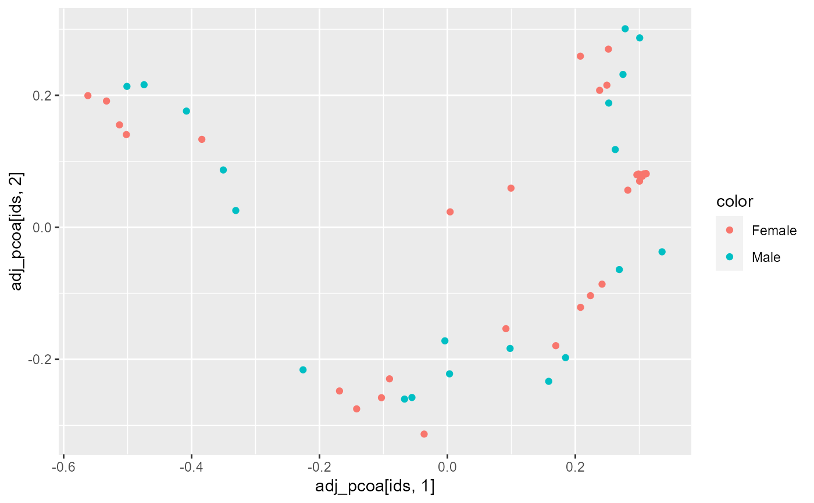

Please cite: Shi Y, Zhang L, Do KA, Peterson CB, Jenq RR. aPCoA: covariate adjusted principal coordinates analysis. Bioinformatics. 2020 Jul 1;36(13):4099-4101. doi: 10.1093/bioinformatics/btaa276.
apcoa(distmat, covariates)
| distmat | A distance matrix ( |
|---|---|
| covariates | A data.frame with the confounding covariate(s). The row names of this data frame should match the labels of the distance matrix. |
A numeric matrix with the same row names as covariates, and
one column for each of the computed adjusted principal coordinates.
#> Warning: package 'ggplot2' was built under R version 4.0.5infile <- system.file("extdata", "hmp50.bz2", package = "rbiom") biom <- read.biom(infile) dm <- unifrac(biom) reg_pcoa <- ape::pcoa(dm)[['vectors']] adj_pcoa <- apcoa(dm, metadata(biom)[,'Sex',drop=FALSE]) ids <- sample.names(biom) color <- metadata(biom, 'Sex') ggplot(mapping=aes(x=reg_pcoa[ids, 1], y=reg_pcoa[ids, 2], color=color)) + geom_point()